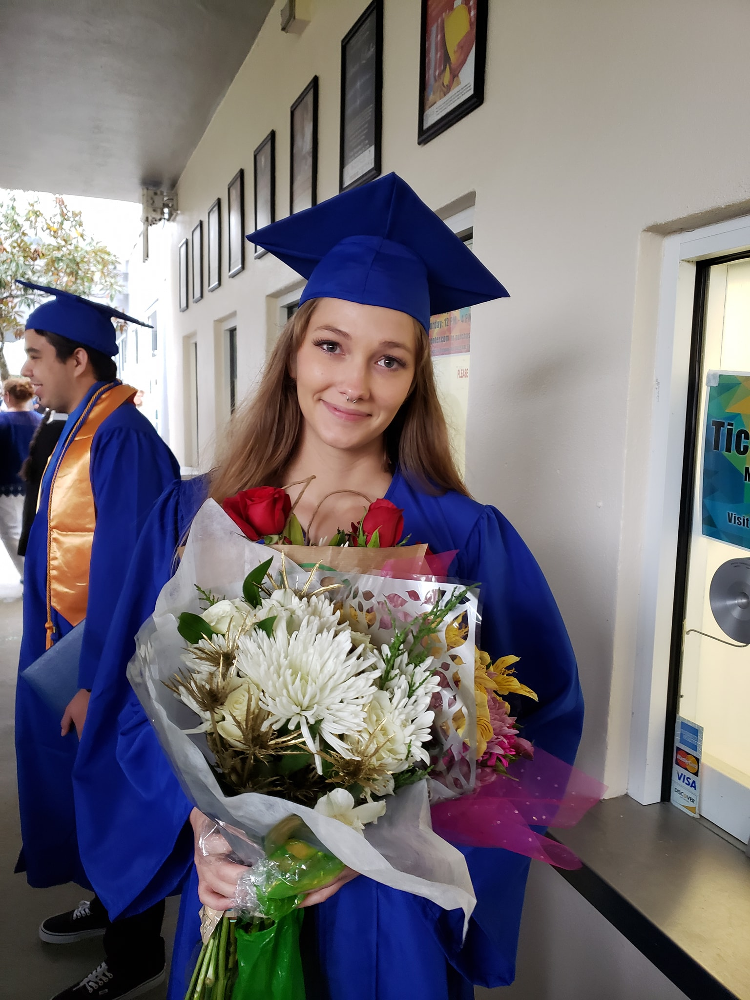

Resume |
 | |
Core CompetenciesTechnical Writing | Editorial Capabilities | Customer Service | Remote Work Experience Microsoft Office 365 Experience | Knowledge of Medical Terminology |Professional ExperienceUltius - Melbourne, FloridaFreelance Writer & Editor from Sep 2019-Present -Writing advertisements, analyses, and assisting novice writers. -Gaining experience in excel, power-point, and word. -Working with a wide variety of costumers all over the world. - Assisting students with their writing skills. Sitel & Western Union - Melbourne, Florida Customer Serivce Representative from April 2020 to August 2020 -Assisting people with transfers and other money transactions. -Answering calls and making sure the customers are satisfied. -Gaining experience with multitasking and meeting client needs. EducationMajoring in Technical CommunicationsI am a bachelor student at the University of Central Florida. I currently hold a 3.25 GPA, and am expecting to graduate in the Summer 2021. ReferencesChrystina Smith- Lead Transport Jason Jackson- Busser Tina Parker- CSR | ||
Home |